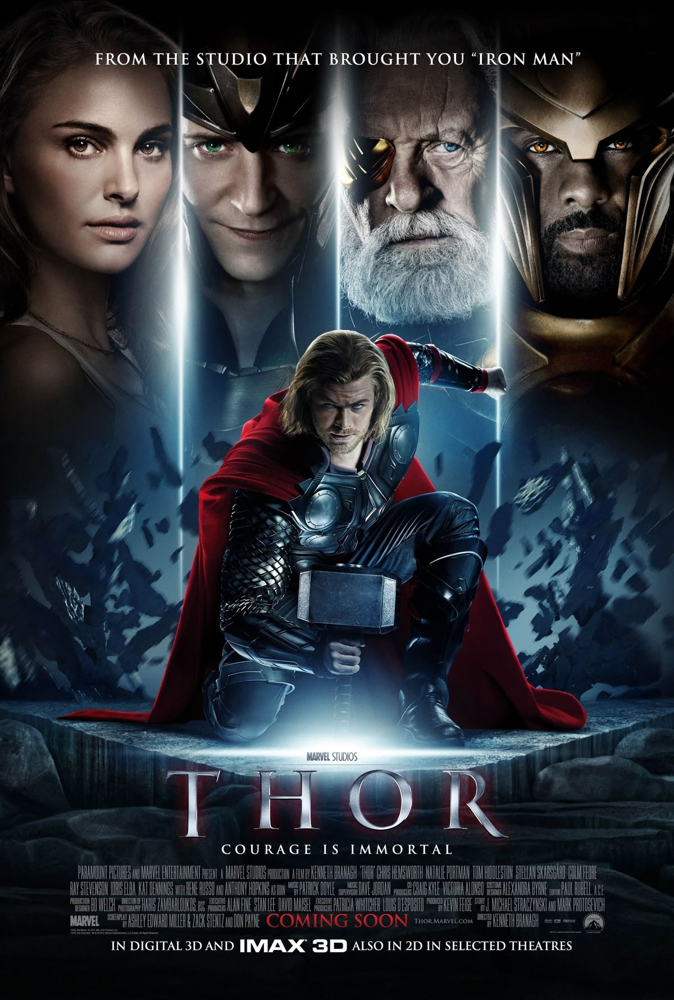
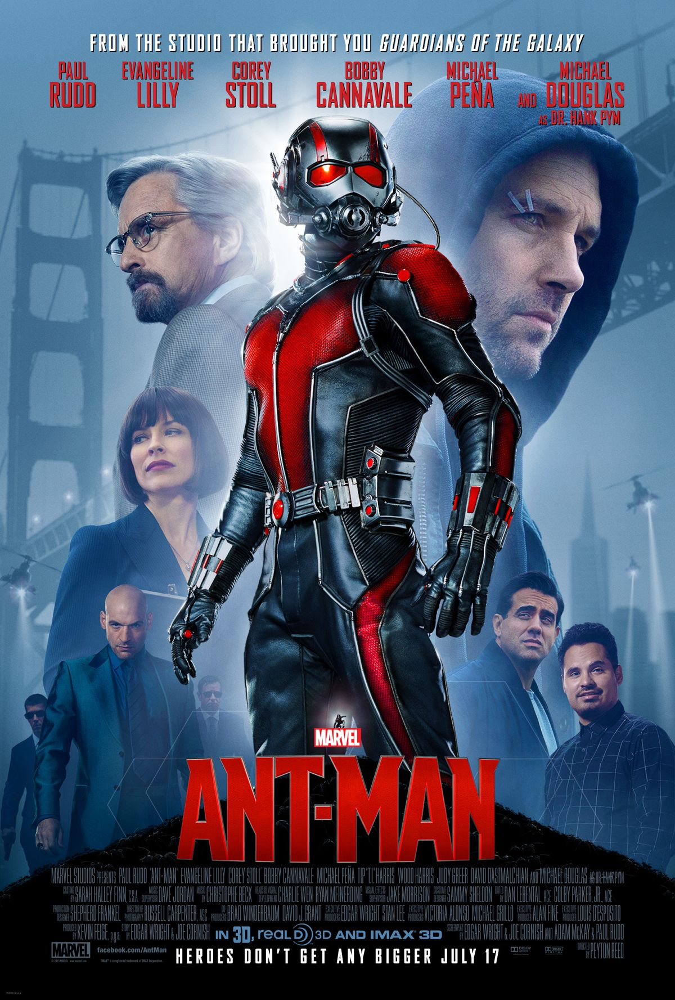

1942–1943
Captain America: The First Avenger

Steve Rogers meldt zich vrijwillig aan voor een experiment dat hem zal transformeren tot een supersoldaat, bekend als de Eerste Avenger. Rogers sluit zich aan bij het Amerikaanse leger, samen met Bucky Barnes en Peggy Carter, om de vijandige organisatie HYDRA te bestrijden, die wordt geleid door de meedogenloze Red Skull.
1995
Captain Marvel

Na een confrontatie met strijdende buitenaardse rassen krijgt luchtmachtpilote Carol Danvers superkrachten en wordt ze onkwetsbaar. Ze moet deze nieuwe vaardigheden beheersen om een machtige vijand te kunnen verslaan.
201O
Iron Man

De miljardair en uitvinder Tony Stark wordt gevangengenomen door Afghaanse terroristen die hem willen dwingen massavernietigingswapens te ontwikkelen. Zonder medeweten van zijn ontvoerders bouwt Stark een geavanceerd cyberpantser waarmee hij kan ontsnappen.
2011
Iron Man 2

In Rusland is Ivan Vanko getuige van de dood van zijn vader, Anton Vanko, een voormalig medewerker van Stark Industries, en gebruikt hij diens ontwerpen om een miniatuurboogreactor te bouwen. Zes maanden later onthult Tony Stark zijn identiteit als Iron Man aan de wereld. Stark gebruikt zijn pak voor vreedzame doeleinden, maar de Amerikaanse overheid probeert hem te dwingen zijn ontwerpen te verkopen, met het argument dat Tony's pak een soort wapen is.
2011
The Incredible Hulk

Het verhaal van Dr. Bruce Banner, die op zoek is naar een genezing voor zijn ongewone "ziekte", die hem tijdens emotionele stress transformeert in het gigantische groene monster Hulk. Op de vlucht voor een leger dat hem wil gevangennemen, vindt Bruce bijna een geneesmiddel, maar al zijn inspanningen worden gedwarsboomd wanneer de Hulk plotseling een nieuwe, ongelooflijk krachtige tegenstander tegenkomt.
2011
Thor

In 965 voert Odin, koning van Asgard, oorlog tegen de IJsgiganten van Jotunheim en hun leider Laufey om te voorkomen dat ze de Negen Rijken veroveren, te beginnen met de Aarde. De krijgers van Asgard verslaan de IJsgiganten in Tønsberg, Noorwegen, en bemachtigen de bron van hun macht, de IJskist.
2012
The Avengers

Loki, de halfbroer van Thor, keert terug, en dit keer is hij niet alleen. De aarde staat op de rand van slavernij, en alleen de allerbesten kunnen de mensheid redden.
2012
Iron Man 3

Wanneer Starks wereld voor zijn ogen instort door toedoen van onbekende vijanden, voelt Tony zich gedwongen de verantwoordelijken te vinden en wraak te nemen. Omdat er geen uitweg meer is, kan Stark alleen nog vertrouwen op zichzelf en zijn vindingrijkheid om degenen die hem dierbaar zijn te beschermen.
2013
Thor: The Dark World

Thor moet vechten om de Aarde en de Negen Rijken te redden van een mysterieuze vijand van vóór het begin van het universum. Na de gebeurtenissen in Thor en The Avengers vecht de protagonist om de orde in de kosmos te herstellen, maar een oeroud ras onder leiding van de wraakzuchtige Malekith keert terug om het universum opnieuw in duisternis te hullen.
2014
Captain America: The Winter Soldier

Na ongekende gebeurtenissen die de Avengers voor het eerst samenbrachten, vestigt Steve Rogers, alias Captain America, zich in Washington D.C. en probeert hij zich aan te passen aan het leven in de moderne wereld. Maar vrede is slechts een droom voor deze held – terwijl hij een collega van S.H.I.E.L.D. probeert te helpen, raakt Steve verwikkeld in gebeurtenissen die een wereldwijde catastrofe dreigen te veroorzaken. Om het kwaadaardige complot te ontmaskeren, bundelt Captain America zijn krachten met Black Widow.
2014
Guardians of the Galaxy

De onverschrokken reiziger Peter Quill komt in het bezit van een mysterieus artefact dat toebehoort aan de machtige en meedogenloze schurk Ronan, die samenzweert om het universum over te nemen. Peter bevindt zich plotseling in het centrum van een intergalactische jacht, waar hij zelf de prooi is.
2014
Guardians of the Galaxy Vol. 2

Iedereen is er: aardbewoner Peter Quill (Star-Lord), de zwijgzame bruut Drax, de groenharige huurling Gamora, de levende boom Groot en de pratende wasbeer. Zoals we van ze gewend zijn, belanden de helden met bewonderenswaardige regelmaat in onvoorstelbare situaties, waaruit ze zich telkens weer weten te redden zonder veel schade aan te richten (en soms zelfs met voordeel voor de mensen om hen heen). Deze keer moeten ze een van de grootste mysteries van het hele heelal ontrafelen: wie is Peter Quills vader?
2015
Avengers: Age of Ultron

De mensheid staat op de rand van de ondergang. Deze keer is de dreiging Ultron, een kunstmatige intelligentie die oorspronkelijk is gecreëerd om de aarde te beschermen tegen elke vorm van gevaar. Ultron heeft de mensheid echter aangewezen als de grootste bedreiging. De internationale organisatie S.H.I.E.L.D. is ingestort en de wereld is niet langer in staat om zo'n machtige vijand het hoofd te bieden. Daarom wenden mensen zich opnieuw tot de machtigste helden van de aarde: de Avengers.
2015
Ant-Man

Gewapend met het verbazingwekkende vermogen om te krimpen en tegelijkertijd immense kracht te verkrijgen, moet oplichter Scott Lang een held worden en zijn mentor, Dr. Hank Pym, helpen het Ant-Man-pak geheim te houden voor een nieuwe generatie bedreigingen.
2016
Captain America: Civil War

De Avengers, onder leiding van Captain America, raken betrokken bij een verwoestend incident van internationale proporties. Deze gebeurtenissen dwingen de overheid ertoe de activiteiten van alle personen met speciale gaven te reguleren door de "Superheldenregistratiewet" in te voeren. Deze wet verplicht hen hun identiteit te onthullen en voor overheidsinstanties te werken.
2016
Black Widow

Natasha Romanoff moet haar verleden onder ogen zien. Black Widow moet zich haar leven van lang voor haar toetreding tot de Avengers herinneren en een gevaarlijke samenzwering ontmaskeren waarbij haar oude bekenden betrokken zijn: Yelena, Alexei, ook bekend als de Red Guardian, en Melina.
2016-2017
Doctor Strange

Een afschuwelijk auto-ongeluk maakte een einde aan de carrière van de succesvolle neurochirurg Doctor Strange. Wanhopig begint hij aan een zoektocht naar een geneesmiddel en ontdekt hij ongelooflijke krachten om ruimte en tijd te manipuleren. Nu hij een schakel vormt tussen parallelle dimensies, is het zijn missie om de bewoners van de aarde te beschermen en het kwaad te bestrijden, in welke vorm het zich ook manifesteert.
2017
Black Panther

Op het eerste gezicht zou je denken dat Wakanda gewoon weer een wild Afrikaans land is, maar dat is niet het geval. Diep verborgen in de woestijn liggen afzettingen van een uniek metaal dat trillingen kan absorberen. Velen hebben geprobeerd het te bereiken, waarbij ze alles op hun pad vernietigden en de inheemse bevolking de dood brachten, maar elke keer stond de mysterieuze geest van de savanne – de Zwarte Panter – op om de onderdrukten te verdedigen.
2017
Spider-Man: Homecoming

Na een historische ontmoeting met de Avengers keert Peter Parker terug naar huis en probeert hij een normaal leven te leiden onder de hoede van zijn tante May. Maar nu waakt er iets anders over Peter… Tony Stark heeft Spider-Man in actie gezien en is voorbestemd om zijn mentor te worden. Wanneer een nieuwe schurk, de Vulture, dreigt alles te vernietigen wat Peter dierbaar is, is het tijd om aan iedereen te bewijzen wat een echte superheld is.
2017
Thor: Ragnarok

Thor keert terug naar Asgard op zoek naar een mysterieuze vijand die de Infinity Stones begeert. Daar ontdekt hij dat de daden van zijn broer Loki, die de troon van Asgard heeft gegrepen, de meest verschrikkelijke gebeurtenis ooit hebben veroorzaakt: Ragnarok. Volgens de legende zal dit de laatste strijd om Asgard inluiden en leiden tot de volledige vernietiging ervan. Om dit te voorkomen, moet Thor de hulp inroepen van zijn mede-Avenger, de Hulk.
2018
Ant-Man and the Wasp

Scott Lang, ook bekend als Ant-Man, heeft zich al gekwalificeerd voor de Avengers, maar de wens om dichter bij zijn dochter te zijn houdt hem in zijn geboorteplaats San Francisco – totdat Dr. Hank Pym, de bedenker van het pak waarmee hij van formaat kan veranderen, Scott oproept voor een nieuwe, gevaarlijke missie. Ant-Man krijgt in zijn strijd tegen deze verraderlijke vijand een nieuwe partner: de Wasp.
2018
Avengers: Infinity War

Terwijl de Avengers en hun bondgenoten de wereld blijven beschermen tegen bedreigingen die te groot zijn voor één enkele superheld, doemt er een nieuwe dreiging op uit de kosmos: Thanos. De intergalactische tiran streeft ernaar alle zes Infinity Stones te verzamelen – artefacten met ongelooflijke krachten die gebruikt kunnen worden om de realiteit naar believen te veranderen. Alles wat de Avengers tot nu toe hebben meegemaakt, heeft tot dit moment geleid – het lot van de aarde is nog nooit zo onzeker geweest.
2023
Avengers: Endgame

De overlevende leden van het Avengers-team en hun bondgenoten moeten een nieuw plan bedenken om de verwoestende acties van de machtige Titaan Thanos te neutraliseren. Na de meest massale en tragische veldslag uit de geschiedenis kunnen ze zich geen fout permitteren.